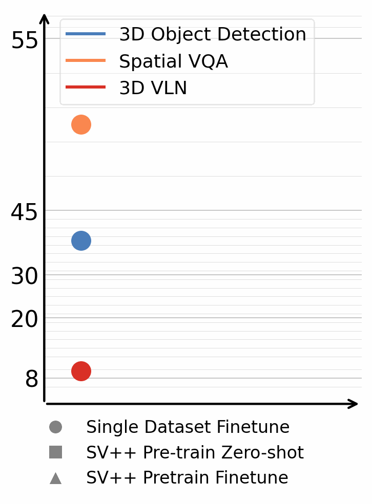

Spatial Reasoning
Visual Question Answering
Browse spatial reasoning questions generated from SceneVerse++ scenes. Select a scene to see its QA pairs alongside the video.
How far can unlabeled internet video take us toward closing the gap with human-annotated 3D data — and what are the real bottlenecks?
Automated pipeline that transforms unlabeled internet videos into high-quality 3D training data for scene understanding, without manual annotation.
Validated across low-level tasks, e.g., 3D object detection, segmentation, and high-level reasoning, e.g., spatial VQA, and vision-language navigation.
Models trained on generated data achieve strong zero-shot performance on multiple tasks and further improve with finetuning.
Annotated 3D scene data is scarce and expensive to acquire, while abundant unlabeled videos are readily available on the internet. In this paper, we demonstrate that carefully designed data engines can leverage web-unlabeled videos to automatically generate training data, to facilitate end-to-end models in 3D scene understanding alongside human-annotated datasets. We identify and analyze bottlenecks in automated data generation, revealing critical factors that determine the efficiency and effectiveness of learning from unlabeled data. To validate our approach across different perception granularities, we evaluate on three tasks spanning low-level perception, i.e., 3D object detection and instance segmentation, to high-level reasoning, i.e., 3D spatial Visual Question Answering (VQA) and Vision-Language Navigation (VLN). Models trained on our generated data demonstrate strong zero-shot performance and show further improvement after finetuning. This demonstrates the viability of leveraging readily available web data as a path toward more capable scene understanding systems.
Explore reconstructed 3D scenes alongside their source videos. Double-click a bounding box to inspect instance details.
Browse spatial reasoning questions generated from SceneVerse++ scenes. Select a scene to see its QA pairs alongside the video.

Models trained on SceneVerse++ achieve strong zero-shot performance on ScanNet and ARKitScenes, and further significantly improve after finetuning (+20.6 F1@0.25).
Training on SceneVerse++ significantly improves the spatial reasoning performance of Vision-Language Models, achieving zero-shot performance comparable to models trained on ground-truth 3D scenes.
From real-world videos to simulated navigation, SceneVerse++ brings an extra 14% navigation success rate after finetuning.
We observe clear differences in how models scale: models operating on raw modalities like 3D voxels or RGB inputs exhibit robust scaling behavior, while models depending on task-specific representations are sensitive to data distribution shifts and hyperparameter changes, e.g, pre-computed segments resulting in limited scalability for 3D instance segmentation. This contrast is less evident in 2D but becomes increasingly pronounced in 3D.
Existing benchmarks may not fully reflect a model's true capability. For example, VSI-Bench exhibits strong QA distribution bias, and VLMs overfit to data-specific cues during in-domain evaluation. Future evaluation should emphasize zero-shot testing on existing benchmarks, avoiding data contamination and minimizing distribution gaps.
Performance is strongly affected by hidden factors that only surface through deeper analysis — for instance, the discrepancy between natural camera motion in real-world videos and goal-directed navigation trajectories. Identifying such mismatches is essential to avoid biases and ensure scaled data provides meaningful improvements.
Core modules such as SfM, instance segmentation, and language grounding are typically trained on task-specific or small-scale benchmarks, limiting their generalization and introducing cascading errors when combined for in-the-wild spatial understanding. Future development should align these sub-modules with the broader goal of enabling robust in-the-wild 3D understanding.
@inproceedings{chen2026lifting,
title = {Lifting Unlabeled Internet-level Data for 3D Scene Understanding},
author = {Chen, Yixin and Zhang, Yaowei and Yu, Huangyue and He, Junchao and Wang, Yan and Huang, Jiangyong and Shen, Hongyu and Ni, Junfeng and Wang, Shaofei and Jia, Baoxiong and Zhu, Song-Chun and Huang, Siyuan},
booktitle = {Proceedings of the IEEE/CVF Conference on Computer Vision and Pattern Recognition (CVPR)},
year = {2026}
}